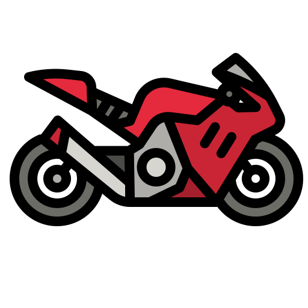

Jorge Martin crowned 2024 MotoGPTM World Champion 
There’s a new name etched onto the MotoGP™ ‘Tower of Champions’. Jorge Martín took the 2024 crown after an epic showdown at the season finale in Barcelona with arch-rival and former room-mate Francesco Bagnaia.
It’s every motorcycle racer’s dream to be a MotoGP™ champion, to be officially the best rider on the planet that year. For Martín, taking the title now proves that he has put behind him the demons from previous years, mistakes made at the worst possible moments as well as completing one of the all-time great comeback stories from the crash that almost ended his career at just 23 years old.
Since MotoGP™ introduced additional half-distance 'Sprint' races last year, riders now compete against each other a minimum of 40 times a year. Consistency has never been more important to winning the championship. As such, with Martín’s triumph, he may have 'only' claimed three Sunday race wins and seven sprint wins, but he crucially has finished on the podium 32 times overall. Compare that to Bagnaia with an incredible 11 Sunday victories, it’s clear the game has changed in this sport and Martín has mastered it.Simply making it to the pinnacle of any sport is a herculean task, to be one of the 22 riders each year who races the best bikes in the best teams on the best circuits is something to be proud of. But to be at the next level, a winner, those athletes are different gravy.
His story on two wheels started like many others who followed this path, on a pocket bike in empty car parks. Racing was a natural calling:
“And I always liked motorbikes and it was a game. Slowly, I was fast, I was winning, I was being promoted to the next championship, then the next championship...” He recalls.
As a fan growing up, he brushed shoulders with the greats of that late '00s, early '10s era in Rossi, Stoner, Lorenzo and later Marc Márquez when he was but a pint-sized 125cc rider himself.
Inspired, the goal of making it to the top was clear with how the Martín family went all in on racing: “My family was making a really big effort for this – I am from Madrid, so going from there to the tracks that were on the Mediterranean coast, Valencia and Barcelona, we were travelling every weekend. Both my parents were working Monday to Friday, so it was really difficult, even though for me I was just playing around.”
It was seemingly plain sailing until the global financial crash. His father lost his job and the money to go racing dried up. Their final option to continue a potential career was applying for the Red Bull MotoGP™ Rookies Cup selection event.
Jorge recalls: “I tried to be my best at that selection event and I think I was the fastest. They selected me, and from that point, everything went in a really good way.”
Max Verstappen wins fourth straight World Championship 
Max Verstappen secured his fourth consecutive Formula One Drivers’ Championship with a fifth-place finish at the Las Vegas Grand Prix. The Dutchman now joins legends Alain Prost and Sebastian Vettel with four titles, trailing only Juan Manuel Fangio (5), Lewis Hamilton (7), and Michael Schumacher (7).
“It feels incredible to win here today and I am so proud to win the Championship,” said Verstappen after the race. “It has been quite a year and I’m proud of how we handled everything as a Team. Today I stayed calm and overtook drivers one by one. I tried to hang in there and do my own race and we pulled it off, and I am very proud to be part of this Team, especially as we are now celebrating our fourth World Title.”
Mercedes’ George Russell won the Las Vegas Grand Prix, having led the race from pole position, with teammate Lewis Hamilton coming home second. Ferrari's Carlo Sainz Jr rounded out the podium, edging out teammate Charles Leclerc who finished in fourth.
Verstappen arrived in Nevada following a remarkable comeback win at the São Paulo Grand Prix, where he charged from 17th on the grid to victory. In Las Vegas, his task was clear: finish ahead of McLaren’s Lando Norris to clinch the championship. Starting fifth, one position ahead of Norris, Verstappen expertly managed his race, crossing the finish line in fifth, while Norris placed sixth.
With this milestone, Verstappen becomes only the fifth driver in F1 history to win four consecutive titles—an achievement surpassed only by Schumacher’s unprecedented five.
Christian Horner, CEO and Team Principal of Oracle Red Bull Racing, praised Verstappen’s dominance: “Max has been in a league of his own this year. With eight Grand Prix wins—more than double anyone else—his consistency, teamwork, and sheer determination have been extraordinary. He’s handled the pressure with the poise of a true champion.”
Oracle Red Bull Racing’s Sergio Pérez delivered a gritty performance, climbing from 16th on the grid to 10th, securing a vital championship point.
Meanwhile, in a strong showing for Visa Cash App RB, Yuki Tsunoda impressed with a ninth-place finish, securing vital points for the team, with Liam Lawson finishing 16th.
With two races remaining in the season, Verstappen has cemented his status as one of Formula One’s greatest drivers. The spotlight now shifts to the remaining battles on the grid, where teams and drivers fight for crucial points to close out the 2024 season.
Thierry Neuville’s decade-long quest ends: World Rally Champion at last!
The 36-year-old had to do things the hard way: he arrived in Japan at the final round of the season needing just six points to clinch the title, but a problem with the turbo on his Hyundai i20 N Rally1 HYBRID meant he finished the first day down in 15th place.
Neuville and co-driver Martijn Wydaeghe hit back on the Saturday with a brilliant run that brought them back up to seventh overall. It meant the crew went into the final day of the season in need of just two points to take the WRC title. "We can be satisfied with today's performance, climbing back to P7 after starting P15 this morning," he said back at the Service Park.
"The pace was good and we've scored four important points heading into Super Sunday."Neuville's championship rival and Hyundai team-mate Ott Tänak piled on the pressure. Knowing he needed maximum points if he was to add another title to his 2019 world title, the Estonian was the pick of the field and established a 38-second lead over Toyota's Elfyn Evans going into the final day.
The valiant charge came to an end on Stage 17 (Nukata) however, when Tänak slid off the road, crashing heavily and having to retire from rally. "It's a proper disaster, there are no other words, it's difficult to describe," said a disappointed Tänak as his championship hopes came crashing down.
It was even tougher when he could only watch as second place in the championship also slipped away, as Evans passed him on the way to his first win of the season. But the Estonian ace was generous in defeat saying of his team-mate Neuville: "It's a great season for him for sure, very consistent and very well managed."
After a rollercoaster start to his rally, Neuville could use the final four stages to reflect on a historic win that's a first not only for him and his co-driver Martijn Wydaeghe, but also for Belgium and the Hyundai Motorsport team after a decade in WRC.
"I'm feeling great to be honest, we worked so long for this,” said Neuville, who led the championship since his opening round victory at Rallye Monte-Carlo. "I want to thank everybody who was part of it, who fought for us and all of the team as well.
Many times we were very close; we always give it our all, but this year we have been rewarded for it."